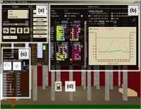

LibViz: Data Visualisation of the Old Library


Authors. Kerstin Ruhland, Michael Sedlmair, Susan Bioletti, Carol O'Sullivan
Venue. International Journal of Architectural Computing (2009)
Abstract. The Old Library of Trinity College Dublin, built in 1732, is an internationally renowned research library. In recent decades it has also become a major tourist attraction in Dublin, with the display of the Book of Kells within the Old Library now drawing over half a million visitors per year. The Preservation and Conservation Department of the Library has raised concerns about the impact of the environment on the collection. The location of the building in the city centre, large visitor numbers, and the conditions within the building are putting the collection at risk. In developing a strategic plan to find solutions to these problems, the department has been assessing and documenting the current situation. This paper introduces ongoing work on a system to visualise the collected data, which includes: dust levels and dispersion, internal and external temperature and relative humidity levels, and visitor numbers in the Old Library. We are developing a user interface for which the data, originally stored in various file formats, is consolidated in a database which can be explored using a 3D virtual reconstruction of the Old Library. With this novel technique, it is also possible to compare and assess the relationships between the various datasets in context.